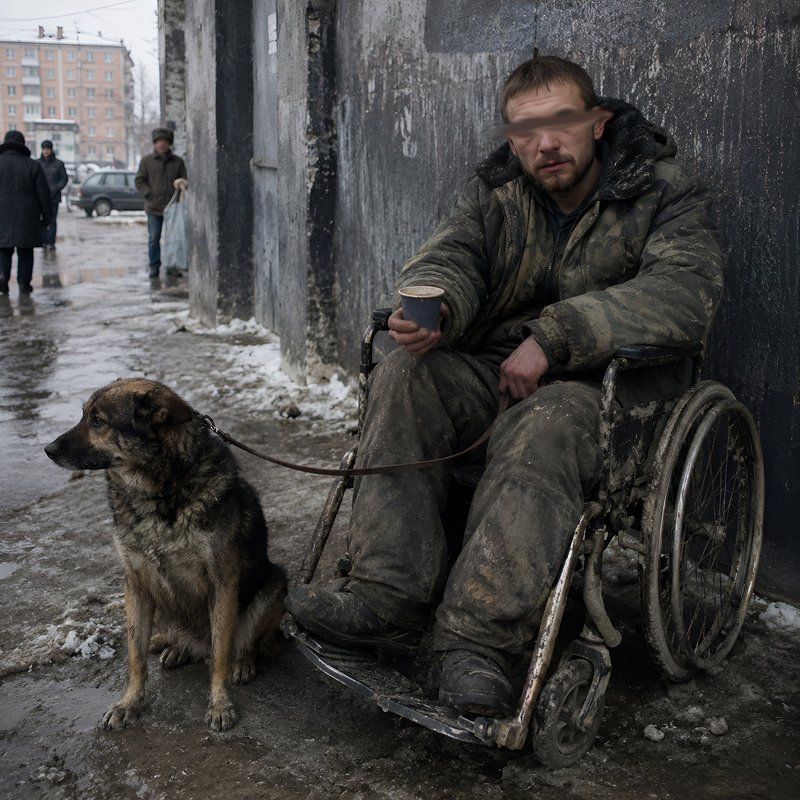

Андрей Трабл, Mouse
Оставим
Исполнители: Андрей Трабл, Mouse
Эту страну мы разделяем в полосы для нарка. Дама с поддатым кавалером тут, словно свинарка. Здесь на любого гостя клеится зрительно марка. Один из самых близких чёрных – «Обелиск» Ремарка. Лучше всего подтапливает свитер, пока под окнами подтапливают яда литр. Считают за своих, но вычислят системой Грида: дело в курении – в Парламенте херовый фильтр. Я своим видом для тебя мудила, но толерантно отдаю четырнадцать водилам. Ведь для меня ещё стишки на музыку – не хлам. А регион теперь – это бывший объём бухла. Чтоб объяснить тебе, не надо логов. И зебра в моём городе отнюдь не на дорогах. То, что лепили годы, не дотащим. Я прячу Бэлансы на полку, от греха подальше. Когда наступят времена и снова солнца свет нас озарит, всем показав, кем мы в итоге стали. Я тут подумал, что, если уже сейчас нас нет, то даже думать страшно, что после себя оставим. Говорите, слазьте-ка, власть дика. Где-то русский крест, где-то свастика. Там, где нищета, там и MasterCard, и не пропасть бы, как мистика. Весело живётся? Ну давай, попробуй, улыбнись-ка. Там по TV норма осадков в эту зиму за год, плюсом русский бунт уже на подступах к Кремлёвским башням. Там «иншааллой» подконтрастируют мне «зигу-загу», а за окном всё те же крики: «Ну давай, ебашь, бля!» Потомки спросят типа: «Оно как?» Там же, где Пасха с Рождеством, там и Ханука. Пока где-то на пати были молодыми, но сбили все кости. Белый. Чёрный. Хм… Домино. А я на днях видал, пацан, лет тридцать где-то с виду в коляске на иконах за Афган брехал: «Подай же!» Огонь в глазах таких, как он, вряд ли теплей, чем свитер. Я на двойной закрою дверь, от греха подальше. Когда наступят времена и снова солнца свет нас озарит, всем показав, кем мы в итоге стали. Я тут подумал, что, если уже сейчас нас нет, то даже думать страшно, что после себя оставим.